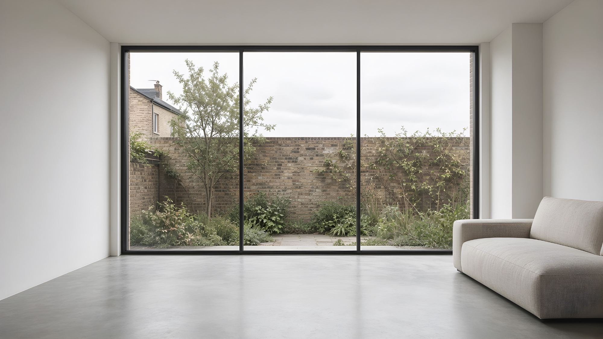

Two panels, one sliding
The simplest and most economical layout. One fixed panel, one that slides behind it.
Slim sliding doors run on rollers in a bottom track, with a narrow interlock where the panels meet. With no lift mechanism, the hardware is simpler, the frames slimmer and the cost lower. For moderate panel sizes, it's the cleanest way to put a wall of glass in a London extension.

Slim sliding and lift & slide look similar from the garden. The difference is in the hardware and the seal. Choose by panel weight, exposure and budget. Our full three-way comparison includes bi-folds.
Each sliding panel sits on twin stainless-steel rollers, sized to its weight. The track can sit flush with the floor.
Brush seals and gaskets close the gaps at the interlock, head and sill. Multi-point locks pull the panels tight when you lock them.
No handle to turn first: unlock and slide.
Plan views. Accent lines are sliding panels; grey lines are fixed.
The simplest and most economical layout. One fixed panel, one that slides behind it.
Either panel opens, so you can choose which side to walk through or open both halves for air.
Two panels stack behind one fixed panel and two-thirds of the width opens. Good for side returns.
A symmetrical garden wall of glass, with each panel light enough for these doors.
Two sliders meet at a corner with no post. The building carries the corner instead, so your structural engineer designs for it early.
The panels disappear into the wall for a full-width opening. The wall cavity has to be designed for it.
Enter the size of the opening in the wall. You’ll see how wide and heavy each panel is, and whether these doors can carry it or lift & slide is the safer choice. These are rough figures.
Ranges for an inline sliding system of this class. Values for your sizes and glass come with your quotation.
| Thermal transmittance, whole door (Uw) | c. 1.0–1.6 W/m²KTriple vs double glazing and size. Approved Document L limiting values: 1.4 for replacement doors in existing homes; 1.6 in new dwellings. |
|---|---|
| Maximum panel weight | up to c. 250 kgSet by the roller class. |
| Maximum panel size | c. 2,800 × 3,000 mm |
| Interlock sightline | from c. 35 mmSlim interlock option. |
| Threshold | Flush (recessed) or low upstand ≤15 mmMeets the accessible-threshold expectation in Approved Document M. |
| Weather (BS 6375-1 / EN 12207, 12208, 12210) | Classified per system test reportBrush-sealed systems suit sheltered sites best. |
| Acoustic (Rw) | up to c. 36 dBWith laminated acoustic glass. |
| Safety glazing | Toughened or laminated throughoutDoors are critical locations under Approved Document K. |
A recessed track gives a level floor from inside to out. It has the same three requirements as any flush threshold.
Glass that keeps the heat in (low-E coating, argon, warm edge). Solar control glass for south and west sides, and quieter laminated glass near roads.
Any colour from the RAL chart, powder coated or anodised, matched across every door and window in the house.
Flush pulls inside and optional key locking outside.
The same four checks as any large opening. Our design guide explains each one.
Slim frames hide less movement. Design the beam to the system limit and detail a deflection gap.
Brush seals are fine in a sheltered garden. Upper floors, roof terraces and open sites may need lift & slide.
Lighter than lift & slide, but a 2.5 m panel still has to get through the house. We check the route at survey.
Uw against the limiting value, the 25% glazing rule for extensions, safety glass, Part M thresholds and Part Q security in new dwellings.
Lift & slide panels are lifted onto rollers by the handle and lowered onto gaskets to seal. That carries heavier panels and seals better. Slim sliders roll all the time and seal with brushes and gaskets. They're lighter, slimmer and cheaper, and best for moderate panel sizes on sheltered sites.
Interlocks from around 35 mm on this class of system. Some minimal systems go further by hiding the outer frame in the floor, walls and ceiling. That needs more building work, so decide early.
A well-made slider with multi-point locking is weathertight on a typical London rear elevation. On exposed sites, upper floors or roof terraces, we'll tell you if lift & slide is the better choice.
Yes. The track recesses into the floor, with a linear drain outside. The slab has to be designed for it before it's poured.
They have multi-point locking, with laminated glass where needed. In new dwellings the door must also meet Part Q.
It is made to order on a branded system. We handle the survey, the delivery and the installation.